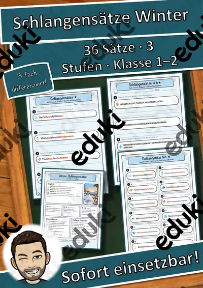
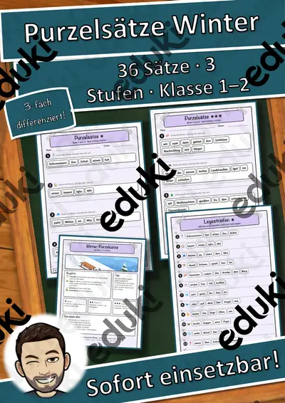
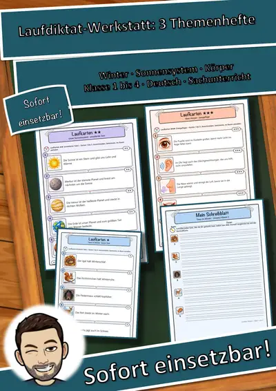

Leichte Sprache Lückentext mit Wortspeicher Hörverstehen und Suchsel
Leichte Sprache – Lückentext mit Wortspeicher & Suchsel | Sachtexte Sprache | Klasse 4–7 | mit Lösungen
Mit diesem abwechslungsreichen Arbeitsblatt lernen Ihre Schülerinnen und Schüler die Leichte Sprache auf motivierende Weise kennen. Der kindgerechte Sachtext vermittelt wichtige Informationen zu den Regeln der Leichten Sprache, zur Zielgruppe wie Menschen mit Lernschwierigkeiten, zu den Merkmalen kurzer Sätze und einfacher Wörter sowie zur Vermeidung von bildhaften Ausdrücken. Anschließend sichern die Kinder ihr Wissen durch einen Lückentext mit Wortspeicher und ein passendes Suchsel.✔ Sachtext in einfacher Sprache✔ Lückentext mit Wortspeicher✔ Suchsel zur Wiederholung wichtiger Begriffe✔ Inklusive vollständiger Lösungen✔ Sofort einsetzbar ohne Vorbereitung✔ Ideal für Vertretungsstunden, Freiarbeit, Stationenlernen und Unterrichtseinheiten
Lehrplanbezug (Grundschule und Sekundarstufe I):Das Material fördert die Lesekompetenz, das sinnerfassende Lesen, die Entnahme von Informationen aus Sachtexten sowie sprachliches und inklusives Grundwissen. Es eignet sich besonders für die Bereiche Heimat- und Sachunterricht, Deutsch, Sozialkunde, Gesundheitserziehung sowie für fächerübergreifendes Lernen.
Enthalten sind:
- Sachtext mit Lückentext
- Suchsel
- Musterlösung zum Lückentext
- Musterlösung zum Suchsel
- PDF-Datei zum direkten Ausdrucken
Ideal für Lehrkräfte, die schnell ein motivierendes Material zur Leichten Sprache, zu Sprachvereinfachungen oder zur Förderung der Inklusion suchen.
So setzen Sie das Material im Unterricht ein: Bewährt hat sich der Einstieg über das Hörverstehen – die Klasse scannt den QR-Code, hört den kindgerecht vertonten Sachtext zu „Leichte Sprache“ und tauscht erstes Vorwissen aus. In der Erarbeitungsphase lesen die Schülerinnen und Schüler den Sachtext in Ruhe und füllen den Lückentext aus; der Wortspeicher gibt dabei Sicherheit und entlastet das Arbeitsgedächtnis. Differenzierung leicht gemacht: Schnelle Lerner bearbeiten den Lückentext mit abgedecktem Wortspeicher, für DaZ/DaF-Lernende und den Förderunterricht dient er als gezielte Wortschatzstütze. Zur Festigung suchen die Kinder im Suchsel acht zentrale Begriffe des Themas – ideal auch als Puffer für schnelle Gruppen oder als Hausaufgabe. Die beiliegende Musterlösung ermöglicht Selbstkontrolle in der Freiarbeit, im Wochenplan und in Vertretungsstunden. Das Material ist ohne Vorbereitung einsetzbar: ausdrucken, austeilen, loslegen.
Passend zu den aktuellen Lehrplänen in Deutschland, Österreich und der Schweiz: Das Arbeitsblatt trainiert genau das, was die Bildungsstandards der Kultusministerkonferenz im Kompetenzbereich „Lesen – mit Texten und Medien umgehen“ fordern – sinnerfassendes Lesen, gezielte Informationsentnahme aus Sachtexten und die Sicherung des Fachwortschatzes. Damit lässt es sich in allen 16 Bundesländern und Schularten direkt einsetzen, etwa im Lernbereich „Lesen – mit Texten und weiteren Medien umgehen“ des bayerischen LehrplanPLUS, im Bereich „Texte und andere Medien“ des Bildungsplans Baden-Württemberg oder im Basiscurriculum Sprachbildung des Rahmenlehrplans Berlin-Brandenburg. Im österreichischen Lehrplan entspricht das dem Kompetenzbereich „Lesen – Umgang mit Texten und Medien“ in Volksschule, Mittelschule und AHS-Unterstufe, im Schweizer Lehrplan 21 dem Fachbereich Deutsch D.2 „Lesen“ mit dem Schwerpunkt „Verstehen von Sachtexten“ (Zyklus 2 und 3). Wortspeicher und Lückentext stützen zudem den systematischen Wortschatzaufbau in Deutsch als Zweitsprache (DaZ/DaF).Mit seinem Thema „Leichte Sprache“ gehört das Blatt zudem in den Sozialkunde/Politische Bildung-Unterricht – hier greifen im Heimat- und Sachunterricht der Lernbereich „Demokratie und Gesellschaft“, in Österreich der Erfahrungs- und Lernbereich „Gemeinschaft“, im Lehrplan 21 die Kompetenz „Gemeinschaft und Gesellschaft – Zusammenleben gestalten“ (NMG.10) – und es bietet direkte Anknüpfungspunkte im Fach Gesundheitsbildung: im Heimat- und Sachunterricht der Lernbereich „Körper und Gesundheit“, im Lehrplan 21 die Kompetenz „Identität, Körper, Gesundheit – sich Sorge tragen“ (NMG.1).
Ähnliche Materialien

Sebastian Kurz Lückentext mit Wortspeicher Hörverstehen und Suchsel

Halloween Taschenlampen-Rätsel „Was steckt im Glas?“ – Sätze mit ein/eine schreiben, 3-fach differenziert (Klasse 1/2)

Schlangensätze Winter: 36 Sätze trennen und schreiben in 3 Stufen mit Schlangenkarten (Klasse 1–2, DaZ)

Würfelsätze Winter: über 3000 Sätze würfeln und schreiben, mit Bildwürfel-Netzen in 3 Stufen (Klasse 1–3, DaZ)

Purzelsätze Winter: 36 Wörter-Durcheinander-Sätze ordnen mit Legestreifen in 3 Stufen (Klasse 1–2, DaZ)

Laufdiktat-Werkstatt Materialpaket: 3 Themenhefte Sachwissen – 45 Sätze × 3 Stufen, Lineaturen, Quiz, Hördiktate (Klasse 1–4)

Einmaleins-Sätze (auch Homeschooling)